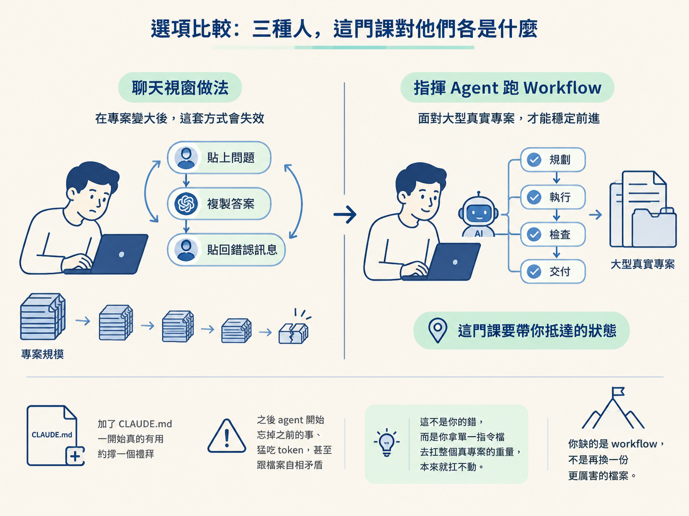
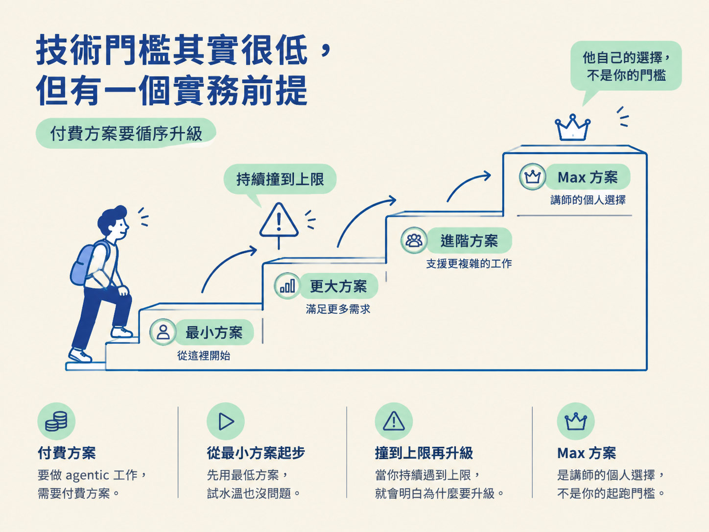
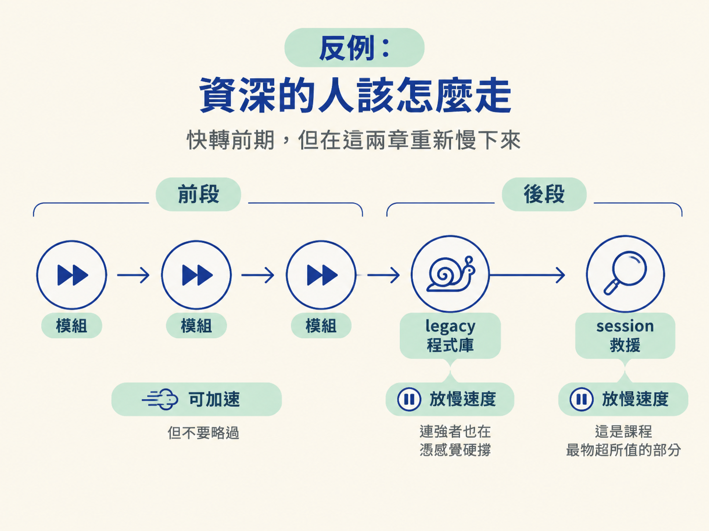

對著自己的狀況做一次自檢：技術門檻到哪裡、要準備什麼付費方案、以及那個比技術更關鍵的心態前提，並決定自己該用什麼節奏走這門課。
前一節講的是這門課要練判斷力。方向對了，接著是更現實的問題：這門課到底是不是為你設計的？講師在開頭就做了一次 gut check，理由很直接：如果你根本不在這門課設定的起點上，那越早講清楚越好，總比讓你花了幾十個小時、走到一半才發現接不上來得誠實。
這一節不是拿資格審你，而是把三件事一次講清楚：你現在的程度落在哪裡、你需要準備什麼、以及那個比任何技術都關鍵的前提。誠實回答，你才知道該用什麼節奏走完它。
這門課挑選讀者的標準不是「會不會某個框架」，而是「你現在在人生的哪個階段」。把三種典型的人並排看，答案立刻清楚：
| 你的狀況 | 這門課對你意味著什麼 |
|---|---|
| 從沒寫過任何一行程式 | 不是你該從這裡開始的地方；先把寫程式的底子打好再回來 |
| 只在聊天視窗用 AI，專案一大就卡住 | 正是這門課鎖定的核心讀者 |
| 加了 CLAUDE.md，一週後 agent 開始失憶、吃 token、自我矛盾 | 你缺的是一套 workflow，不是一份更好的檔案 |
中間那一列最值得攤開來看。你很可能習慣這樣的流程：把問題貼進 ChatGPT 或 Claude，把答案複製回來改一改，碰到錯誤就把錯誤訊息貼回去，如此週而復始。這套做法其實有效，問題是它有一個明確的有效期限。專案一長到某個規模，它就開始不 work，而你也說不出壞在哪裡。如果你對這個畫面很有共鳴，這門課就是為你準備的：它要帶你從「跟 AI 聊天」跨到「指揮一個 agent 在真實專案上跑 workflow」。
第三列則是很多人走過的下一步。你聽人建議加了 CLAUDE.md，一開始真的有用，大約撐一個禮拜，然後 agent 開始忘掉剛才講過的事、猛吃 token，甚至跟它「明明讀過」的那份檔案自相矛盾。重點是：這不代表你失敗，而是你拿一份單一指令檔去扛一整個真專案的重量，本來就扛不動。你缺的是 workflow，不是再換一份更厲害的檔案。

表格不用背，問自己下面三句就能定位：
第一題要是答不上來，這門課就不是你的起點。後兩題若你一聽就點頭，那你就是講師口中的「exactly who this is for」。
技術面講白：你只要會寫程式、能基本操作終端機，並且在編輯器裡找得到路，就這樣。不需要先懂任何特定框架、任何特定 AI 工具，或任何 agent 的知識，這些課程會從零建立起來。
唯一的實務前提是錢：這門課需要 coding agent 的付費方案。免費層拿去隨便玩、東摸西摸沒問題，但要真正做 agentic 工作，就得有付費方案。講師的建議很省：從最小方案起步，等到你「持續」撞到它的上限再升級，到那時候你會非常清楚自己為什麼要升。他個人用的是 Max 方案，但那是他自己的選擇，不是你的起跑門檻。

這一節如果只能記住一件事，就是這句：比所有技術條件都重要的前提，是你願不願意改變自己原本的工作方式。講師在這波變化裡觀察到的贏家，不是最資深的那批人，而是最開放的那批人。他看過有二十年經驗的老手拒絕調整，結果卡在原地；也看過職涯才六個月的人，因為願意重新思考工作方式而快速起飛。
那如果你已經是資深工程師，而且每天都在跑 agent 呢？判準在這裡會翻轉，但翻轉的方向不是「整段跳過」。講師的建議是：前期的模組可以走得快一點，卻不要略過；然後到了 legacy 程式庫與 session 救援的章節，重新把速度慢下來。因為那兩個地方，連很強的 agent 使用者其實也都在憑感覺硬撐，而那正是這門課對你最物超所值的部分。

判斷自己是不是這門課要的人，看三個訊號：你能不能獨立做出小東西、聊天視窗的做法有沒有在專案變大後失效、你是不是拿一份指令檔去扛整個專案。技術門檻只要會寫碼、會用終端機和編輯器；實務上需要一個 coding agent 的付費方案，從最小方案起步就好。但真正決定成敗的是心態：贏的是願意改變工作方式的人，不是年資最深的人。資深者可以快轉前期但別跳過，並在 legacy 與救援章節慢下來。
確認自己站在對的起點、也知道該抱什麼心態進來之後，下一步是把這趟旅程的地圖看清楚。下一節會帶你分辨課程要走的兩個實戰場景：從零開始的專案，以及在你沒寫過的既有程式碼上動工。